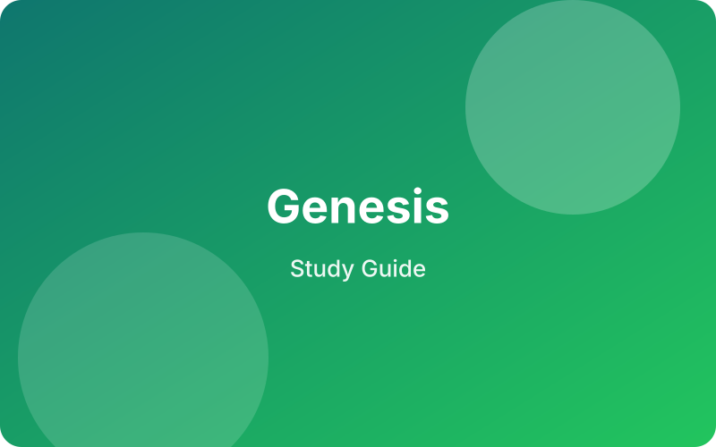

Concordia Bible Institute
Genesis Study Guide
Open the Genesis guide here, then jump straight to the episode-level study guide collection or the Concordia Bible Institute podcast archive.

Concordia Bible Institute
Open the Genesis guide here, then jump straight to the episode-level study guide collection or the Concordia Bible Institute podcast archive.
Main Guide
Genesis gives readers a strong starting point for the whole Bible: creation, the fall, judgment, promise, covenant, and the preservation of God's people. This updated main page is designed to feel like the first stop before readers move deeper into the full study experience.
Use this overview before reading through the full book or joining a group session.
Each section can support discussion, teaching prep, and personal reflection.
Buttons below guide readers into episodes, video content, and more study guides.
What to notice
Modern flow
Video + Podcast
For now, this Genesis page points readers to the Concordia Bible Institute YouTube channel so they can access the broader video podcast library and future Genesis-related teaching.
Open the Concordia Bible YouTube Channel ↗Keep exploring
After Genesis, go back to the main library and open any guide directly to its own main page.